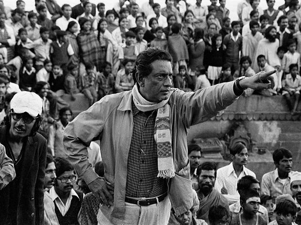

Satyajit Ray
(born May 2, 1921, Calcutta, India—died April 23, 1992, Calcutta)

Here are some lesser-known facts about the legendary filmmaker:
- Satyajit Ray designed book covers for Signet Press. Some of his notable covers include the ones for Jim Corbett's classic Man-Eaters of Kumaon and Jawaharlal Nehru's Discovery of India.
- Ray worked in the Calcutta office of DJ Keymer which is now Ogilvy where he rose to the rank of Art director.
- He combined Indian motifs and calligraphy and created four Roman fonts, with two bearing his name, Ray Roman and Ray Bizarre. Others included Daphnis and Holiday Script.
- In 1948, Ray and his friend Harisadhan Das Gupta wanted to make a film based on Tagore's Ghare Baire. Ray wrote the script while Gupta would direct. A producer wanted some changes to the script which Ray refused to do and the project never took off.
- Satyajit Ray made his debut with Pather Panchali. He was also the first person to use a teaser advertising campaign before it hit the theatres.
- The West Bengal government which was financing Pather Panchali wanted changes to the ending to make it more positive. The film could make it to the Cannes Film Festival only due to the intervention of Prime Minister Jawaharlal Nehru.
- Ray was the first Indian to be conferred with the highly coveted Oscar. He was bestowed with the Academy Award for Lifetime Achievement.
- Ray was honoured with the Bharat Ratna by the Government of India before his demise.
*If you have time, you should read more about this incredible human being on his wikipedia page*